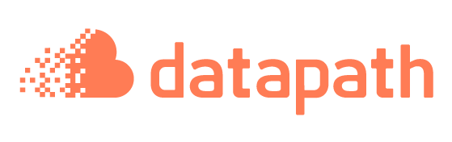

Programa de Google AI · Agentes con ADK
Precios de lista de Google Cloud en us-central1, septiembre de 2026, sin impuestos.
Una instancia de PostgreSQL 16 en Cloud SQL donde el ADK guarda las sesiones del agente: las tablas sessions, events, app_states y user_states.
| Parámetro | Valor | Por qué |
|---|---|---|
| Instancia | adk-sessions | Compartida por adk web y la API FastAPI |
| Tipo de máquina | db-f1-micro, edición Enterprise | La más pequeña disponible |
| Región | us-central1, zonal | La misma que Vertex AI |
| Disco | 10 GB HDD, con crecimiento automático | Un chat ocupa muy poco |
| Copias de seguridad | Desactivadas | Entorno de aprendizaje |
| Concepto | Configuración | Precio | Al mes (730 h) |
|---|---|---|---|
| Cómputo | db-f1-micro zonal | 0,0105 USD / hora | ≈ 7,70 USD |
| Disco | 10 GB HDD | 0,09 USD / GB / mes | ≈ 0,90 USD |
| Copias de seguridad | Desactivadas | 0,08 USD / GB / mes | 0 |
| Alta disponibilidad | No (zonal) | — | 0 |
| Tráfico de salida | Vía Cloud SQL Auth Proxy | 0,12 USD / GB | céntimos |
| Total aproximado | ≈ 8,60 USD / mes | ||
Cloud SQL no tiene capa gratuita. A diferencia de BigQuery, cobra por hora aunque nadie la use.
Un curso de 8 semanas con 2 clases de 3 horas por semana, encendiendo la instancia solo durante la clase:
| Escenario | Coste de 2 meses |
|---|---|
| Siempre encendida | ≈ 17,20 USD |
| Solo en clase (48 h de cómputo) | ≈ 2,50 USD |
Apagar
gcloud sql instances patch adk-sessions \
--project=<TU_PROJECT_ID> \
--activation-policy=NEVEREncender
gcloud sql instances patch adk-sessions \
--project=<TU_PROJECT_ID> \
--activation-policy=ALWAYSgcloud sql instances delete adk-sessions. Elimina también el histórico.Resumen
La decisión importante no es el tamaño de la máquina, sino acordarse de apagarla.
Precios de lista de Google Cloud, us-central1, septiembre de 2026. Consultar cloud.google.com/sql/pricing para valores actualizados.